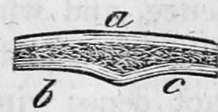

Structure Of The Human Body Continued. Part 2
Description
This section is from the book "Human Physiology For The Use Of Elementary Schools", by Charles Alfred Lee. Also available from Amazon: Human Physiology, for the Use of Elementary Schools.
Structure Of The Human Body Continued. Part 2
10.-The osseous fabric.-The osseous or bony tissue is another form of cellular matter. The bones constitute the hardest and the most solid parts of the whole system, and are the principal parts that give it form and stability, forming as it were, the frame work of the animal machine. The number of bones in the human adult, including the teeth, is 245. When we examine the broken surface of a bone, with a mi-£roscope, we find it abundantly supplied with minute bloodvessels, without any appearance of fibres or plates. The different densities of bones depends on the different mechanical arrangements of the parts composing them.
11. The bones not only constitute the frame work of the human fabric, but they also protect the vital organs, as the heart and lungs, the brain and spinal marrow, and also constitute a series of levers, by means of which, through the agency of muscles, locomotion is performed. The bones in man also furnish cavities for the secure lodgment of the delicate organs of the senses, as the orbits of the eye, ear, mouth, and nostrils. In man, and the higher order of animals, the bones are for the most part in the interior of the body, and when near the surface, as in the skull, they are covered by muscles or membranes; but in the Crustacea, insects, etc, the bones compose an external case within which all the soft parts are contained.
12. If we divide any of the long bones longitudinally, we find two kinds of structure, the hard or compact, and the alveolar or spongy. Indeed there is no bone that does not exhibit to some extent both of these structures ; the compact forming its external, and the spongy its internal part. These two formations are clearly seen in the bones which compose the skull, (as in the following cut,) with the spongy or cancellated structure between them. This will serve to illustrate the structure of all the flat bones.
a. External plate, b. c. Internal plates.

13. The above cut represents a section of the thigh bone, a. a. the extremities having a shell or thin plate of compact texture, crowded with small cells, diminishing in size, but increasing in number as they approach the articulation ; c, the cavity for containing the marrow ; b. b. the walls of the shaft very firm and solid. The compact part is thickest near the middle of the bone where the greatest strength is required. This structure admirably combines the greatest degree of strength, with the least degree of weight aud expense of material. It can be mathematically demonstrated that the resistance of a cylindrical body, such as a pillar or mast, to a force applied transversely is increased in proportion to its diameter. The same quantity of matter, therefore, placed in the circumference of a circle produces a stronger bone than if united in the centre with proportionally diminished diameter.
14. How admirably adapted is the arrangement of the parts of the long bones to the purposes for which they are destined. Their extremities are the fixed points from which the muscles re act, and where greater space was required for the insertion of the tendons ; their diameter is on this account considerably increased, and their osseous matter is disposed in nearly an equal degree through their whole substance ; while in the middle of the bone, which is more exposed to external violence, and where nothing was wanting but mere strength, the bony plates are all consolidated together into a compact dense ring, leaving the centre nearly hollow.
15. While the long bones of the lower extremities are adapted for the support of the body, and its various progressive motions, those of the upper extremities are equally fitted for acting upon contiguous bodies, being so attached to the trunk as to be easily applied to them in all directions.
The flat bones on the other hand offer an extensive surface of defence, as those of the skull, or for the origin and insertion of muscles, as the shoulder blade. The rounded bones composing the spinal column and the angular bones of the wrist and ankle, have the bony matter extended over a considerable space, in order in the most efficient manner to combine the properties of lightness and strength. The whole assemblage constitutes an apparatus which is capable of executing all the various movements that are necessary for the purposes of life, with a degree of precision and velocity that is truly wonderful.
16. The bones are covered with a fibrous sheathing of dense membrane, called periosteum, which seems to nourish the bone, for where it is abraded the bone perishes. It contains an abundance of blood vessels which run from it into the bone ; besides these, a large blood vessel enters the shafts of the long bones near the centre, and branches out in each direction, while numerous others enter at their extremities. These blood vessels, though generally too minute to convey the red particles of the blood, yet they readily transmit the colouring matter of madder. Numerous experiments have proved that when animals are supplied with food mixed with that substance, in a few days the bones are coloured red, or of a pinkish colour, and on the discontinuance of it, in a short time their natural colour is restored, showing the rapidity with which deposition and absorption are carried on in the healthy state. This is shown in cases of fracture, where the broken ends of a bone become speedily united. I have lately had a case of fractured thigh bone in a child, where it became united with considerable firmness in one week.
17. Marrow is a species of fat deposited in the central canals of the cylindrical bones, and in the lattice work of the spongy bones. It is contained in the cells of a delicate membranous web, and has been supposed by some to serve as a reservoir of nourishment, and by others, to keep the bones from becoming dry and brittle. It is found in greater quantity in the adult and aged than in the young ; in the latter, indeed, its place is occupied by a gelatinous fluid.
Continue to:
- prev: Chapter IV. Structure Of The Human Body Continued
- Table of Contents
- next: Structure Of The Human Body Continued. Part 3
Tags
humans, anatomy, skeleton, bones, physiology, organs, nerves, brain